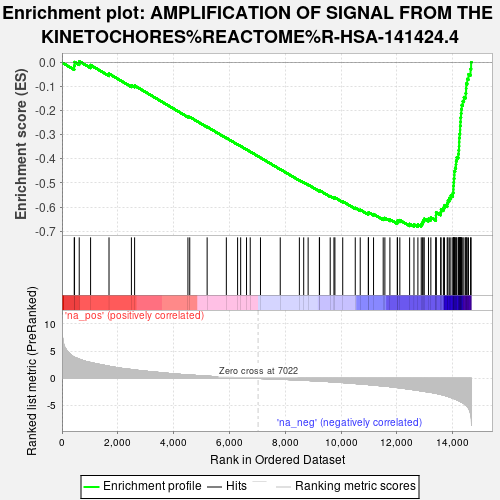
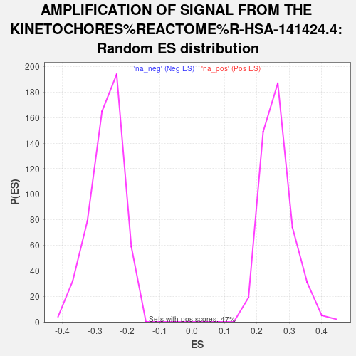

| | | Dataset | Control_vs_GWTreated |
| Phenotype | NoPhenotypeAvailable |
| Upregulated in class | na_neg |
| GeneSet | AMPLIFICATION OF SIGNAL FROM THE KINETOCHORES%REACTOME%R-HSA-141424.4 |
| Enrichment Score (ES) | -0.681513 |
| Normalized Enrichment Score (NES) | -2.5766091 |
| Nominal p-value | 0.0 |
| FDR q-value | 0.0 |
| FWER p-Value | 0.0 |
Table: GSEA Results Summary

Fig 1: Enrichment plot: AMPLIFICATION OF SIGNAL FROM THE KINETOCHORES%REACTOME%R-HSA-141424.4
Profile of the Running ES Score & Positions of GeneSet Members on the Rank Ordered List
| SYMBOL | RANK IN GENE LIST | RANK METRIC SCORE | RUNNING ES | CORE ENRICHMENT | | 1 | RPS27 | 438 | 3.892 | -0.0137 | No |
| 2 | CLIP1 | 449 | 3.867 | 0.0018 | No |
| 3 | PPP2R5A | 617 | 3.529 | 0.0051 | No |
| 4 | PPP2R5B | 1024 | 2.905 | -0.0106 | No |
| 5 | MIS12 | 1684 | 2.223 | -0.0465 | No |
| 6 | NDEL1 | 2486 | 1.622 | -0.0947 | No |
| 7 | PPP2CB | 2601 | 1.556 | -0.0960 | No |
| 8 | CENPT | 4511 | 0.636 | -0.2242 | No |
| 9 | DYNC1LI2 | 4576 | 0.617 | -0.2260 | No |
| 10 | DYNLL2 | 5199 | 0.404 | -0.2670 | No |
| 11 | PPP2R5C | 5887 | 0.226 | -0.3132 | No |
| 12 | DYNC1H1 | 6290 | 0.143 | -0.3401 | No |
| 13 | PMF1 | 6400 | 0.117 | -0.3471 | No |
| 14 | B9D2 | 6610 | 0.071 | -0.3612 | No |
| 15 | SEC13 | 6743 | 0.046 | -0.3700 | No |
| 16 | CLASP1 | 7110 | -0.014 | -0.3951 | No |
| 17 | DYNC1I2 | 7818 | -0.139 | -0.4430 | No |
| 18 | PPP2R5D | 8503 | -0.289 | -0.4887 | No |
| 19 | CENPS | 8658 | -0.326 | -0.4979 | No |
| 20 | RCC2 | 8817 | -0.374 | -0.5071 | No |
| 21 | NUP160 | 9219 | -0.483 | -0.5326 | No |
| 22 | DYNC1LI1 | 9225 | -0.486 | -0.5309 | No |
| 23 | ZW10 | 9608 | -0.599 | -0.5546 | No |
| 24 | NUP133 | 9742 | -0.638 | -0.5611 | No |
| 25 | CENPC | 9776 | -0.651 | -0.5606 | No |
| 26 | NSL1 | 10056 | -0.752 | -0.5766 | No |
| 27 | CENPQ | 10505 | -0.928 | -0.6034 | No |
| 28 | KIF2A | 10683 | -1.000 | -0.6114 | No |
| 29 | PAFAH1B1 | 10972 | -1.126 | -0.6264 | No |
| 30 | PPP2CA | 10979 | -1.132 | -0.6221 | No |
| 31 | NUP37 | 11160 | -1.213 | -0.6294 | No |
| 32 | PPP2R5E | 11506 | -1.387 | -0.6472 | No |
| 33 | NUP43 | 11566 | -1.424 | -0.6453 | No |
| 34 | NUDC | 11746 | -1.503 | -0.6513 | No |
| 35 | CENPH | 12009 | -1.671 | -0.6623 | No |
| 36 | DSN1 | 12018 | -1.674 | -0.6558 | No |
| 37 | CKAP5 | 12102 | -1.727 | -0.6543 | No |
| 38 | MAD1L1 | 12452 | -1.969 | -0.6700 | No |
| 39 | ITGB3BP | 12608 | -2.076 | -0.6719 | No |
| 40 | NDE1 | 12749 | -2.193 | -0.6723 | Yes |
| 41 | PPP2R1B | 12868 | -2.279 | -0.6709 | Yes |
| 42 | CENPP | 12908 | -2.304 | -0.6639 | Yes |
| 43 | PPP2R1A | 12937 | -2.339 | -0.6561 | Yes |
| 44 | RANBP2 | 12976 | -2.368 | -0.6487 | Yes |
| 45 | NUP85 | 13128 | -2.488 | -0.6487 | Yes |
| 46 | MAPRE1 | 13213 | -2.561 | -0.6437 | Yes |
| 47 | TAOK1 | 13393 | -2.721 | -0.6446 | Yes |
| 48 | BUB3 | 13396 | -2.727 | -0.6333 | Yes |
| 49 | PPP1CC | 13401 | -2.736 | -0.6222 | Yes |
| 50 | CENPL | 13565 | -2.911 | -0.6212 | Yes |
| 51 | CLASP2 | 13578 | -2.926 | -0.6097 | Yes |
| 52 | SPC25 | 13663 | -3.049 | -0.6027 | Yes |
| 53 | NUP107 | 13701 | -3.109 | -0.5923 | Yes |
| 54 | CENPU | 13799 | -3.257 | -0.5853 | Yes |
| 55 | CENPM | 13824 | -3.295 | -0.5731 | Yes |
| 56 | SGO1 | 13874 | -3.382 | -0.5623 | Yes |
| 57 | XPO1 | 13930 | -3.493 | -0.5515 | Yes |
| 58 | AHCTF1 | 14001 | -3.617 | -0.5412 | Yes |
| 59 | CENPO | 14019 | -3.655 | -0.5270 | Yes |
| 60 | DYNLL1 | 14021 | -3.659 | -0.5118 | Yes |
| 61 | NUF2 | 14032 | -3.686 | -0.4970 | Yes |
| 62 | CENPF | 14040 | -3.700 | -0.4820 | Yes |
| 63 | KNTC1 | 14053 | -3.718 | -0.4673 | Yes |
| 64 | RANGAP1 | 14055 | -3.721 | -0.4518 | Yes |
| 65 | SPC24 | 14082 | -3.772 | -0.4378 | Yes |
| 66 | CENPA | 14111 | -3.819 | -0.4237 | Yes |
| 67 | AURKB | 14117 | -3.840 | -0.4080 | Yes |
| 68 | INCENP | 14142 | -3.903 | -0.3933 | Yes |
| 69 | SKA1 | 14195 | -4.038 | -0.3800 | Yes |
| 70 | CENPK | 14210 | -4.059 | -0.3639 | Yes |
| 71 | SGO2 | 14222 | -4.098 | -0.3475 | Yes |
| 72 | BUB1 | 14227 | -4.114 | -0.3306 | Yes |
| 73 | KIF2C | 14230 | -4.118 | -0.3135 | Yes |
| 74 | ZWINT | 14242 | -4.148 | -0.2969 | Yes |
| 75 | BUB1B | 14259 | -4.185 | -0.2805 | Yes |
| 76 | KNL1 | 14262 | -4.192 | -0.2630 | Yes |
| 77 | SPDL1 | 14274 | -4.230 | -0.2461 | Yes |
| 78 | CENPI | 14280 | -4.257 | -0.2286 | Yes |
| 79 | ERCC6L | 14294 | -4.300 | -0.2115 | Yes |
| 80 | CENPN | 14305 | -4.336 | -0.1941 | Yes |
| 81 | MAD2L1 | 14319 | -4.365 | -0.1767 | Yes |
| 82 | SKA2 | 14357 | -4.470 | -0.1605 | Yes |
| 83 | CDCA8 | 14398 | -4.601 | -0.1440 | Yes |
| 84 | KIF18A | 14460 | -4.878 | -0.1278 | Yes |
| 85 | BIRC5 | 14475 | -4.920 | -0.1081 | Yes |
| 86 | NDC80 | 14480 | -4.943 | -0.0877 | Yes |
| 87 | ZWILCH | 14516 | -5.159 | -0.0685 | Yes |
| 88 | CDC20 | 14561 | -5.400 | -0.0489 | Yes |
| 89 | PLK1 | 14635 | -6.473 | -0.0268 | Yes |
| 90 | CENPE | 14655 | -6.972 | 0.0010 | Yes |
Table: GSEA details [plain text format]

Fig 2: AMPLIFICATION OF SIGNAL FROM THE KINETOCHORES%REACTOME%R-HSA-141424.4: Random ES distribution
Gene set null distribution of ES for AMPLIFICATION OF SIGNAL FROM THE KINETOCHORES%REACTOME%R-HSA-141424.4